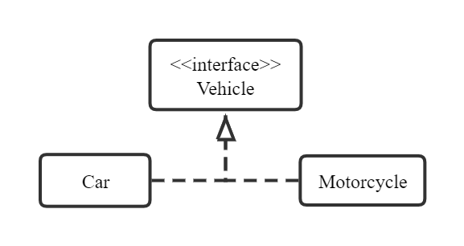
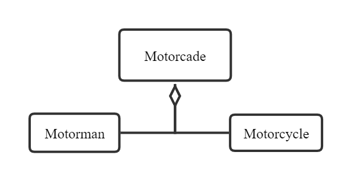
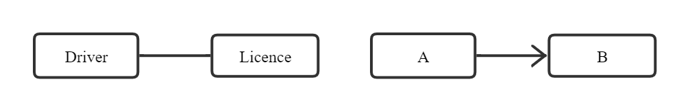
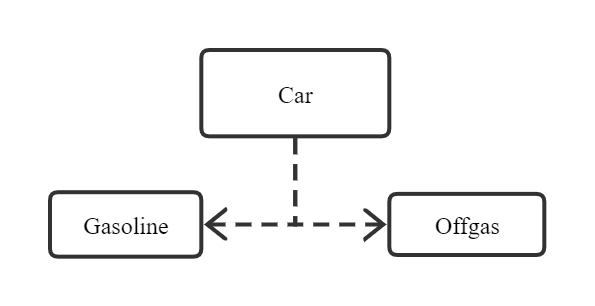
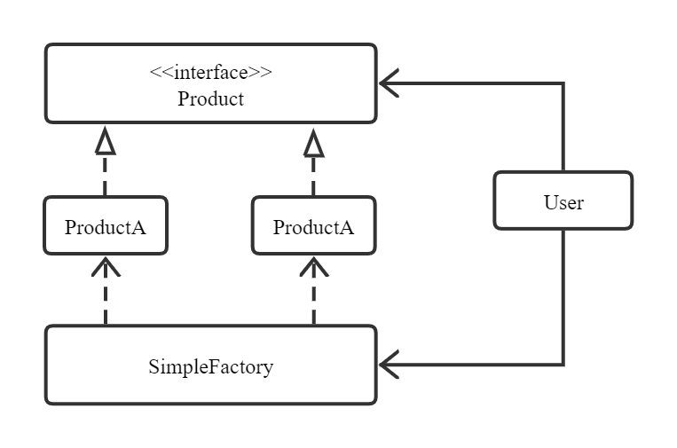
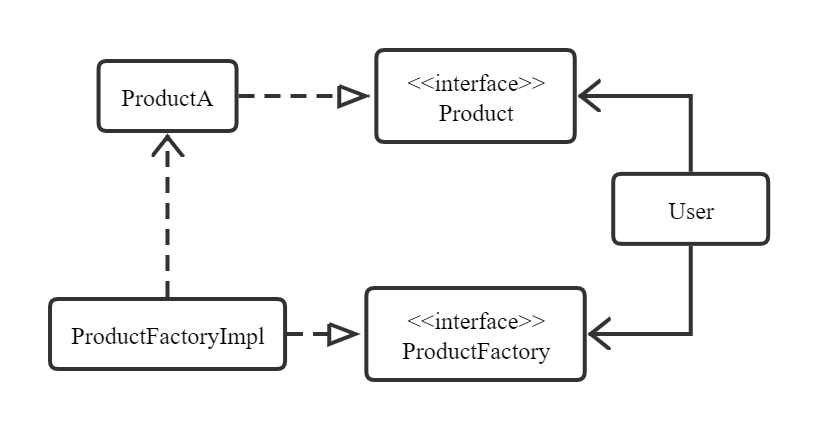
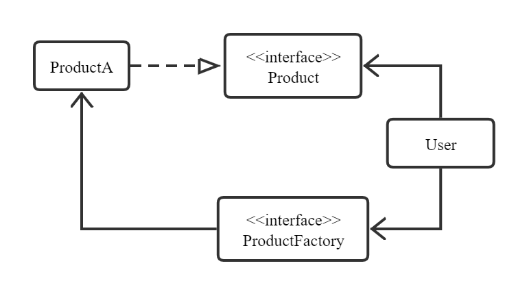
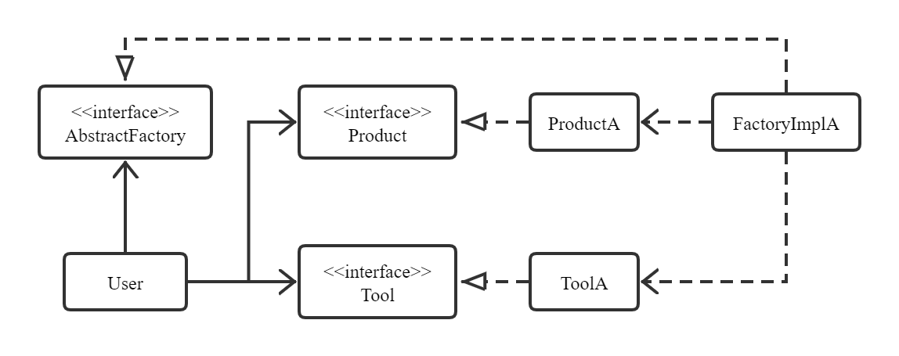
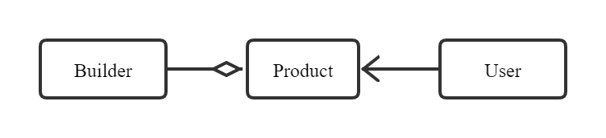

1、类图
1.1 泛化关系（Generalization）
用于描述非抽象类的继承关系，关键字为extends。
1 | class Vehicle {...} |
1.2 实现关系（Realization）
用于描述抽象类/接口的实现关系，关键字为implements。

1 | interface Vehicle {...} |
1.3 聚合关系（Aggregation）
用于描述整体和部分个体之间的非强依赖关系，整体不存在时部分个体依旧存在。

1.4 复合关系（Composition）
用于描述整体和部分之间的强依赖关系，整体不存在时部分也不存在。

1.5 关联关系（Association）
用于描述类对象之间的静态强关联关系，该关系与运行过程的状态无关，在运行前就可以确定。关联关系通常以成员变量（静态方法变量）的形式实现。
关联关系默认不强调方向，表示对象之间默认互相知道，如果特别强调方向（如下图），则表示A知道B，但B不知道A。

1.6 依赖关系（Dependency）
用于描述类对象之间的临时性动态关联关系，该关系与运行过程中的状态相关，在运行时确定。依赖应当总是单向的，要杜绝双向依赖及循环依赖的产生。依赖关系通常以类方法的传入传出参数（或局部变量）实现。

1 | class Car { |
泛化 = 实现 > 复合 > 聚合 > 关联 > 依赖
2、设计模式
设计模式是解决一些固有问题的一系列方案，学习现有的设计模式可以做到经验复用。
2.1 创建型
2.1.1 单例（Singleton）
确保在一个进程中一个类有且只有一个实例，并提供该实例的全局访问点。
1）线程安全
1 | class Singleton { |
2）延迟加载，使用同步访问方法以防止循环初始化，但也增加了访问成本，线程安全，性能不好
1 | class Singleton { |
3）针对静态域的延迟加载，lazy initialization holder class模式，静态访问方法不需要同步，不会因延迟初始化增加访问成本，线程安全，性能好
1 | class Singleton { |
4）枚举类型，绝对安全
1 | enum Singleton { |
5）一般不是通过new操作符，而是由框架（例如Spring）来创建装配从而获取单例，@Component注解默认将组件标注为单例。
2.1.2 简单工厂（Simple Factory）
提供用于创建一个对象的简单工厂类，实例化操作由简单工厂类完成。
如下图所示，User类关联Product接口和SimpleFactory工厂类，通过SimpleFactory简单工厂实现具体Product的实例化。User类可忽略具体Product（ProductA和ProductB）的细节，从而将User类与具体Product实现类解耦。

1 | interface Product{...} |
2.1.3 工厂方法（Factory Method）
提供用于创建一个对象的工厂接口，实例化操作由该工厂接口的具体实现类完成。
如下图所示，User类关联Product接口和ProductFactory接口，通过ProductFactory接口的具体类（ProductFactoryImpl）实现具体Product（ProductA）的实例化。User类可忽略真正的工厂（ProductFactoryImpl）和具体Product（ProductA）的细节，从而将User类与工厂类及具体Product实现类解耦。

1 | interface Product{...} |
以上内容所述工厂方法可化简为静态工厂方法（Static Factory Method），如下所示

1 | interface Product{...} |
这样做的好处在于factoryMethod方法可能会new一个新的ProductA实例，也可能直接返回一个缓存的实例，对于User类来说，无需知道ProductA创建的细节。
总结：
实际更常用的是更简单的静态工厂方法；
工厂方法定义工厂接口和产品接口，但创建实际工厂和实际产品被推迟到子类实现，使得调用方只和抽象工厂和抽象产品打交道；
调用方尽量持有接口或者抽象类，避免持有具体类型的子类，以便工厂方法能随时切换不同的子类返回，而不影响调用方代码。
2.1.4 抽象工厂（Abstract Factory）
提供用于创建对象家族的工厂接口（对象家族指很多个必须一起创建出来的相关的对象），对象家族中的单一对象由工厂方法创建出来，即实例化操作由该工厂接口的具体实现类完成。
如下图所示，User类关联Product接口、Tool接口以及AbstractFactory接口，通过AbstractFactory接口的具体类（FactoryImplA）实现具体Product（ProductA）和具体Tool（ToolA）的实例化。User类可忽略真正的工厂（AbstractFactory）、具体Product（ProductA）和具体Tool（ToolA）的细节，从而将User类与工厂类、具体Product实现类及具体Tool实现类解耦。

1 | interface Product {...} |
2.1.5 生成器（Builder）
通过多个可选的步骤或者多个可选的零件来灵活创建一个复杂的对象。
如下图所示，Builder模式并不直接生成一个Product类的对象，而是让客户端调用生成器得到一个Builder对象，然后在Builder对象上调用类似于setter的方法来设置可选参数，最后调用无参的builder方法来生成真正需要的（通常是不可变类的）Product类对象。
Builder类通常作为需要构建的类的静态成员类，Builder类的设置方法均返回this，以便将调用链接起来，得到一个流式的API。

1 | class Product { |
2.2 行为型
2.2.1 观察者（Observer）
定义对象间的一种一对多的依赖关系，当一个对象的状态发生改变时，所有依赖于它的对象都得到通知并自动被更新，又称发布-订阅（Publish-Subscribe）模式，发布方和订阅方彼此分离，互不影响。
如下图所示，观察者Admin和Customer与被观察者Store彼此分离，互不影响，被观察者将通知变成一个Event对象，观察者自己从Event对象中读取通知类型和通知数据。
1 | public interface Observable { |
总结：
不推荐借助Java标准库中的
java.util.Observable类和Observer接口来实现观察者模式；不同的
Event对象有着不同的通知Topic，观察者可以自行订阅自己感兴趣的Topic。
2.2.2 状态（State）
将不同状态下的行为逻辑分拆到不同的状态类中，允许对象在其内部状态改变时改变其行为。
1 |
总结：
状态模式常用于带有状态的对象中，增加新状态非常容易；
状态模式的关键在于状态转换，简单的状态转换可以直接由调用方指定，复杂的状态转换可以在内部根据条件触发完成。
2.2.3 策略（Strategy）
定义一系列算法，这些算法被封装到一个对象中，策略模式使得这些算法在运行时可以互相替换，并且独立于使用这些算法的客户端。
1 |
总结：
一个完整的策略模式要定义策略以及使用策略的上下文，策略模式的核心思想是在一个计算方法中把容易变化的算法抽出来作为“策略”参数传进去，使得新增策略不必修改原有逻辑；
状态模式与策略模式类似，都能够动态改变对象的行为，状态模式通过状态转移来改变State对象，而策略模式通过本身决策来改变所使用的算法；
状态模式主要是用于解决动态的状态转移问题，策略模式主要是用于动态地替换所使用的算法；
策略模式和Lambda表达式配合使用可极大提高程序灵活性，例如
Arrays.sort (T[] a, Comparator<? Super T> c)方法就可根据lambda表达式所提供的比较策略c来实现不同比较策略下的排序
2.2.4 模板方法（Template Method）
定义一个操作中的算法框架，并将一些步骤的实现延迟到子类，使得子类可以在不改变算法结构的同时修改一些步骤的实现。
如下图所示，清洗、调料以及烹饪这三步是固定的，但是可以在RoastChicken和FriedChicken子类中，定义souse和cook函数的具体实现。
1 |
总结：
模板方法的核心思想是：父类定义骨架，子类实现某些细节；
为了防止子类重写父类的骨架方法，可以在父类中对骨架方法使用final；
3）对于需要子类实现的抽象方法，一般声明为protected，使得这些方法对外部客户端不可见。
2.3 结构型
2.3.1 适配器（Adapter/Wrapper）
把一个抽象类/接口转换成另一个用户需要的抽象类/接口，使得不兼容的接口可以一起正常工作。
如下图所示，User类通过DogToCatAdapter适配器将Dog接口转换成用户需要的Cat接口，经过转换，用户在调用Cat接口的meow方法时，实际间接调用的是Dog接口bark方法。
1 |
2.3.2 装饰器（Decorator）
在运行期动态地给对象实例增加各种新的功能。如下图所示，抽象类ProductDecorator内复合了Product接口，通过扩展ProductDecorator可以得到各种具备不同功能的产品，用户可以叠加各种功能得到自己需要的产品。
1 |
总结：
可以代替相同功能的子类，从而降低设计各种子类的工作量；
把核心功能和附加功能分开，两部分都可以独立地扩展，最后由调用方在运行期间动态地自由组合得到自己需要的功能；
Proxy让调用者认为获取到的是核心类接口，但实际上是代理类，而Decorator让调用者自己创建核心类（ProductImpl），然后在核心类上一层一层地叠加各种功能。
2.3.3 享元（Flyweight）
利用共享的方式来支持大量细粒度的对象。如下图所示，product1和product2是同一个对象，返回结果为true。
1 |
总结：
对于不可变类（实例不能被修改的类）来说，反复创建其相同的实例没有必要，直接向调用方返回一个共享的实例即可；
享元模式常用于工厂方法的内部优化，在工厂内部，很可能返回缓存的实例而不是new一个新的实例；
在实际应用中，享元模式主要应用于缓存，即客户端重复请求某些对象时，不必每次查询数据库或者读取文件，而是直接返回缓存中的对象。
2.3.4 代理（Proxy）
对调用方提供一个代理，该代理能够控制对一个对象的访问。
如下图所示，ProductProxy通过定义APPProduct类型的成员变量，从而在调用APPProduct的fun方法的前后增加一些额外的操作。
1 |
根据代理所增加的额外操作的不同，代理可分为：
远程代理（Remote Proxy）：本地调用者持有的接口是一个代理，该代理将对接口的方法转换成远程调用并返回结果，该代理控制了对远程对象的访问，此时代理附加的额外操作是对请求对象和返回对象进行编码并发送至远程对象；
虚拟代理（Virtual Proxy）：调用者先持有一个代理对象，而真正的对象并没有创建，直到客户端真的需要调用该对象时，才创建真正的对象，该代理控制了对创建开销很大的对象的访问，此时代理附加的额外操作是创建真正要访问的对象；
保护代理（Protection Proxy）：该代理根据调用者的权限控制了对对象的访问，此时代理附加的额外操作是检查调用者是否具有访问的权限；
智能代理（Smart Reference）：该代理取代了简单的指针，在存在多个外部调用者时控制了对对象的访问，此时代理附加的额外操作是对调用者个数进行计数（即记录对象的引用次数），在调用者访问对象时检查是否已经锁定了它，在调用者不进行调用时释放对象。